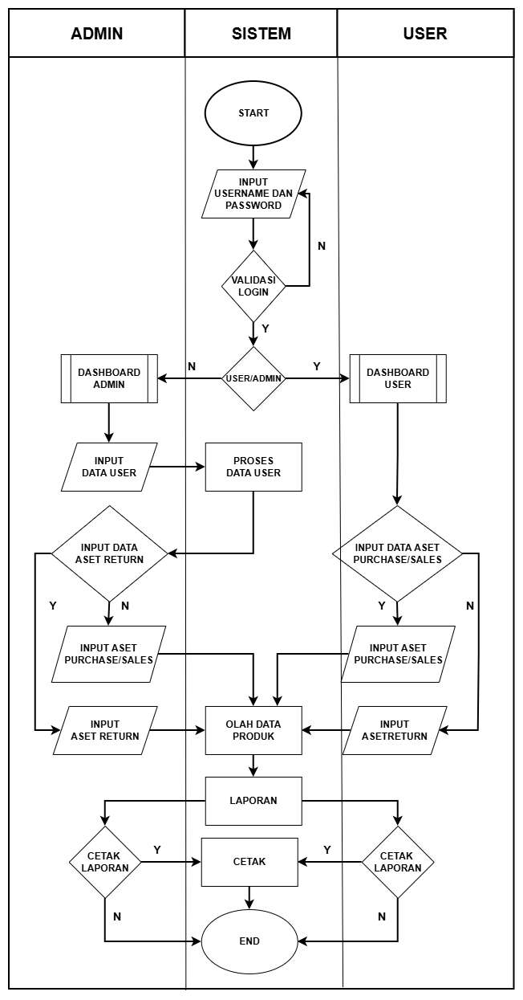
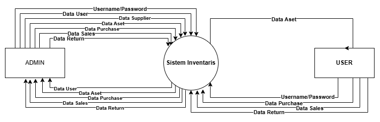
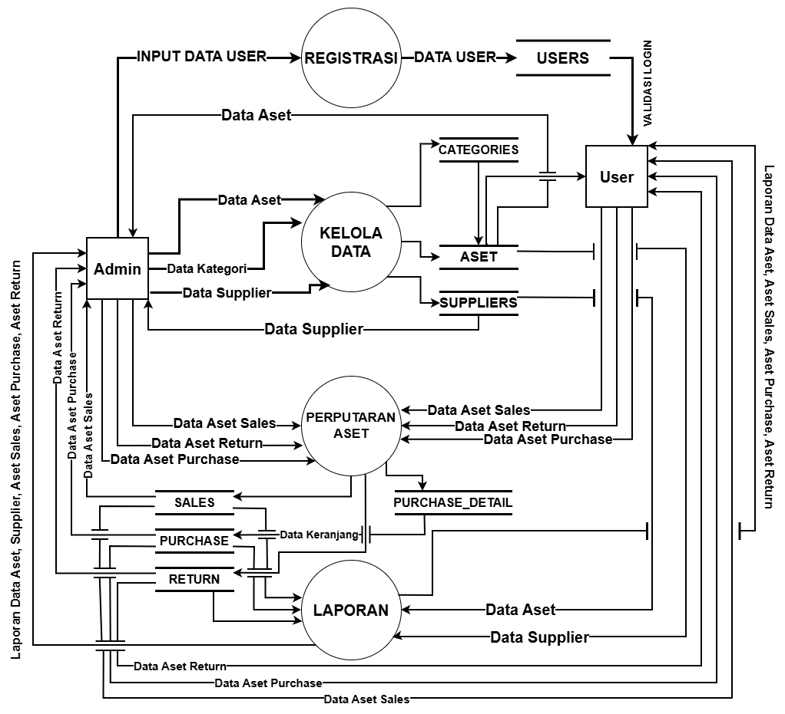
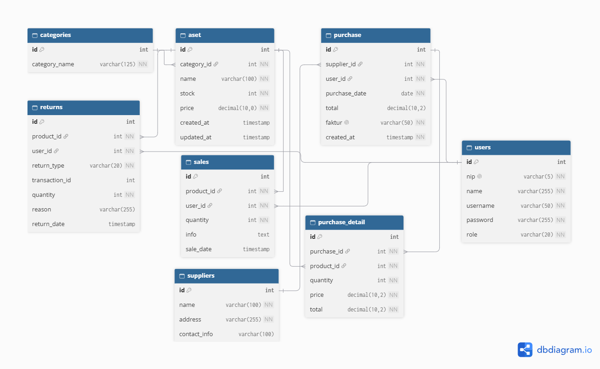

Detail Dokumentasi Proyek
Manajemen Inventaris Aset - Overview & Panduan
Sistem informasi pengelolaan aset perusahaan berbasis web yang dirancang untuk mengotomatisasi pencatatan mutasi barang, meminimalkan kesalahan input, mempercepat penyusunan laporan, serta memastikan akurasi antara data digital dan kondisi fisik aset di gudang.
Repositori ini menampilkan dokumentasi perancangan sistem dan analisis bisnis. Seluruh source code, konfigurasi server, serta kunci API tidak disematkan untuk mematuhi kebijakan privasi, hak kekayaan intelektual, serta perjanjian kerahasiaan dengan pihak mitra terkait.
Latar Belakang & Analisis Masalah
- Profil Studi Kasus: UD. Jawa Press (berlokasi di Krembung, Sidoarjo) merupakan perusahaan manufaktur produksi massal bahan cetak kertas (seperti majalah dan kalender tahunan) yang mengandalkan ketepatan sirkulasi inventaris aset alat produksi dan penunjangnya.
- Pain Points: Proses manual & lambat, ketergantungan lembar kerja terpisah (Microsoft Excel), serta hambatan rekapitulasi bulanan secara valid dan real-time.
Fitur Utama Sistem
Business Requirement Document (BRD)
Sistem Manajemen Inventaris Aset dirancang dan dikembangkan untuk mengoptimalkan proses pengelolaan aset secara digital. Sistem ini bertujuan untuk meningkatkan akurasi proses pencatatan data barang serta transaksi masuk dan keluar, meminimalkan risiko kesalahan manual (human error), serta menyajikan laporan rekapitulasi yang valid dan real-time.
Problem Statement (Identifikasi Masalah)
- Ketergantungan pada Pencatatan Manual: Dokumentasi data aset inventaris (baik barang masuk maupun keluar) masih dilakukan secara manual menggunakan Microsoft Excel atau lembar kerja terpisah.
- Inefisiensi Waktu & Risiko Human Error: Proses dokumentasi memakan waktu lama, rentan terhadap kesalahan pencatatan, serta sering terjadi duplikasi data.
- Hambatan Rekapitulasi: Kesulitan dalam melakukan perhitungan rekap bulanan yang akurat sehingga mengurangi efisiensi kerja di tiap bagian perusahaan.
Project Objectives & Scope
- Tujuan: Mengembangkan sistem berbasis web untuk optimalisasi aset secara real-time, mengurangi human error, dan mendukung pengambilan keputusan strategis.
- In-Scope: Manajemen pengguna multi-level, manajemen data master & aset, log transaksi (purchase & return), serta pelaporan terpusat.
Functional & Non-Functional Requirement
Berikut adalah ringkasan spesifikasi kebutuhan fungsional (FR) dan non-fungsional (NFR) sistem:
| ID | Modul / Fitur | Perilaku Sistem |
|---|---|---|
FR-01 |
Autentikasi Login | Validasi kredensial pengguna dan level hak akses (Role Admin & User/Staff) sebelum memasuki Dashboard. |
FR-02 |
Manajemen Pengguna | Admin dapat mengelola data pengguna (menambah, menghapus, atau mengubah data staff). |
FR-03 |
Manajemen Data Master | Pengelolaan data dasar seperti data master aset, data supplier (vendor), dan data kategori aset. |
FR-04 |
Log Transaksi Pembelian | Modul pencatatan transaksi mutasi aset masuk dari supplier atau vendor ke dalam sistem. |
FR-05 |
Log Pengembalian Barang | Modul pencatatan pengembalian aset yang sudah usang atau bermasalah kembali ke supplier. |
FR-06 |
Pelaporan & Visualisasi | Penyajian statistik diagram untuk monitoring harian serta fitur unduh laporan rekapitulasi inventaris. |
Pemodelan Sistem & Arsitektur
Dokumen ini memuat penjelasan teknis dan perancangan alur kerja, aliran data, serta basis data dari sistem manajemen inventaris aset untuk mengoptimalkan proses pengelolaan aset secara digital.
1. Flowchart Sistem
Diagram yang memberikan gambaran seluruh alur proses sistem, mulai dari proses validasi hingga hasil akhir aktivitas sistem berdasarkan hak akses.


Klik gambar untuk memperbesar- Autentikasi Pengguna: Pengguna memasukkan username dan password untuk divalidasi sistem ke dasbor masing-masing.
- Pengelolaan Data & Transaksi: Admin mengelola data master, supplier, retur, dan pembelian; User/petugas menginput purchase aset baru.
- Monitoring & Pelaporan: Pemantauan ketersediaan aset serta pengunduhan laporan log purchase dan return.
2. Diagram Konteks
Diagram yang memberikan gambaran aliran data masukan maupun keluaran secara makro antara sistem manajemen inventaris dengan entitas eksternal.


Klik gambar untuk memperbesar- Admin (Supervisor): Memberikan hak akses ke user, mengelola data aset, supplier, serta memproses retur aset.
- User (Staff): Mengelola data purchase aset baru dan monitoring ketersediaan aset.
3. Data Flow Diagram (DFD) Level 1
Diagram lanjutan yang merinci dekomposisi proses fungsional utama pada sistem beserta elemen tempat penyimpanan data (data store).


Klik gambar untuk memperbesar- Proses 1.0 (Autentikasi): Mengelola input data pengguna ke data users untuk validasi login.
- Proses 2.0 (Kelola Data Master): Mengelola data kategori, aset, dan supplier.
- Proses 3.0 (Perputaran Aset): Mengelola transaksi penjualan, pembelian, dan pengembalian.
- Proses 4.0 (Pelaporan): Menyajikan rekapitulasi laporan inventaris secara terpusat.
4. Relasi Basis Data (ERD)
Diagram yang menggambarkan struktur tabel relasi di dalam basis data untuk mendukung integritas operasional inventaris aset.


Klik gambar untuk memperbesar| Tabel Utama | Fungsi / Deskripsi Data |
|---|---|
users |
Menyimpan data akun, NIP, kredensial, dan tingkat hak akses (role). |
aset & categories |
Menyimpan master data aset barang beserta kategori, informasi stok, dan harga. |
suppliers |
Menyimpan master data vendor atau pemasok aset. |
purchase & purchase_detail |
Mencatat transaksi pengadaan dan pembelian aset baru dari supplier. |
sales & returns |
Mencatat riwayat keluarnya aset serta mutasi pengembalian barang (returns). |